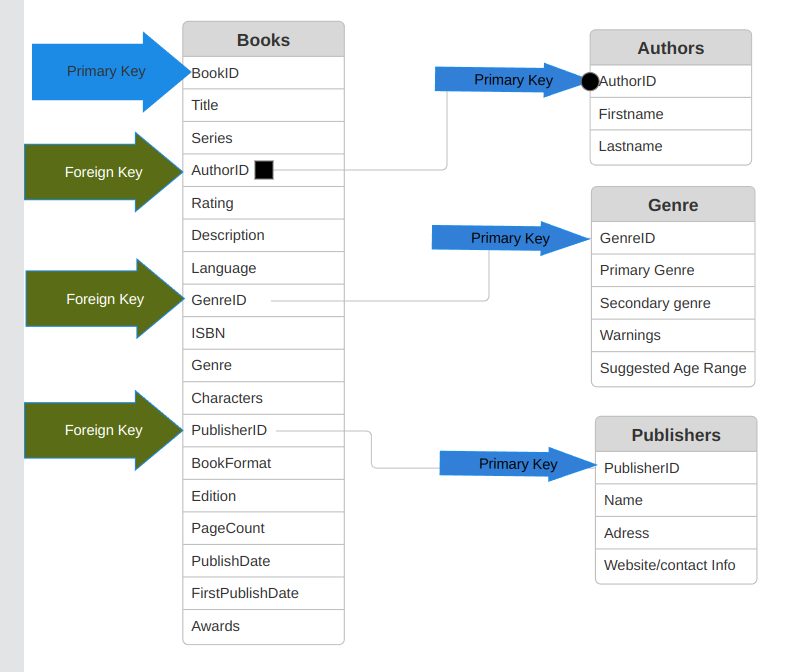

Objectives:
- The objective of this lab is to introduce students to the fundamental concepts of database keys, vocabulary, and normalization without involving programming or mathematical operations. Students will gain a basic understanding of these concepts through hands-on exploration and practical examples.
References, a video, a PowerPoint and some notes are available at my website https://www.aholdengouveia.name/IntroData/databasekeysandvocab.html
Complete the following
Using the data you have collected and started working with
If you need to switch away from your original data for any reason, please check in with me before you do so.
My examples will be based on the book data I collected previously, 100bestbooks.csv if you have trouble adding your data, make sure to check how many characters are allowed in each field, it's likely the default will be a text[varchar] and only allow 100 characters, but you can change that to whatever you need.
- Create a table that has the labels for all your data. You can create this graphic using any program you want. Here is an example of what this should look like based on my book data: figure[h!] [scale=.3]{Table1Example1_100bestbooks.png} This is an image of my single table from the original CSV. Database table diagram showing a single table structure for 100 best books data with column headers and field definitions from the original CSV file figure

Deliverables
- A text document that contains the answers to all the above questions
- Your data in saved as a database, not a spreadsheet.
- Image of your original labeled table from question 1
- Image of your Entity Relationship Diagram (ERD) from question 5